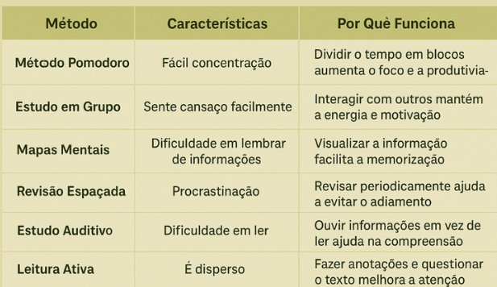
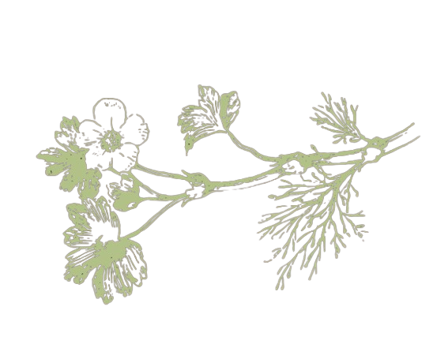

ESTUDO EFICIENTE
Seja claro no que você deseja e persevere através dos estudos. Dessa forma, você vai colher os frutos de todo este tempo investido.
||Evolua seu modo de estudo ||
COMO MONTAR UMA ROTINA DE ESTUDOS
Estudar exige ritmo e constância.
DEFINA HORÁRIOS
Aplique métodos e preveja imprevistos.
Estudar de forma saudável é consumir conhecimento de maneira orgânica e constante.
Desenvolva ou descubra seu método!
MÉTODOS DE ESTUDO
Cada mente aprende de um jeito, encontramos uma tabela a qual
lhe ajudará a descobrir qual método
cabe
mais com sua forma de aprendizado.

DISCIPLINAS DIFÍCEIS
Todo estudante tem uma matéria que parece mais desafiadora.
Dificuldade é sinônimo de avanço, e se você
se sente desconfortável com determinado assunto,
talvez
signifique que você está crescendo junto dele!
Aperfeiçoe técnicas de resolução de exercícios e
revise o
conteúdo!
Revisão
Revisão é momento de crescimento, desenvolva práticas de aprendizagem eficientes.

Revise o conteúdo para maior absorção e maior desenvoltura nas avaliações para uma maior compreensão do conteúdo.